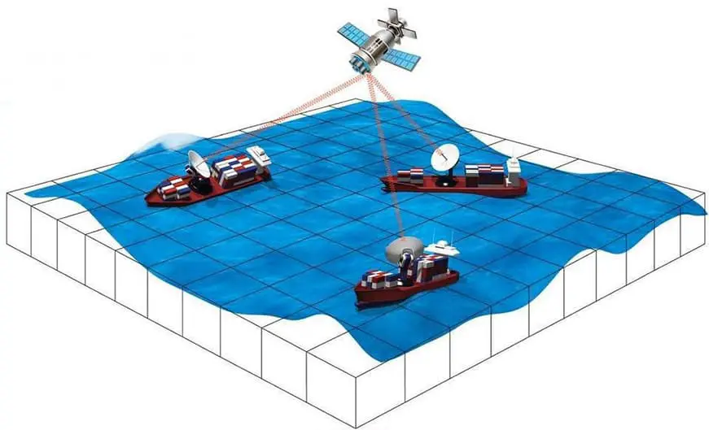

White Paper can serve this purpose remarkably well.
The format allows information and research findings to be presented dispassionately to anyone interested in studying the technology or its ramifications.
The audience includes Cobham's own dealer network, the IT, finance and procurement officers of customer companies, prospective customers, channel partners, journalists, analysts, or investors.
The reader of a White Paper is looking to understand how a particular technology, product or method is a superior choice when solving a specific business problem.
White Papers are especially important for highly technical products with long sales cycles, or products used in critical situations. A company investing in such a product will typically go through an extensive decision-making process that spans multiple departments and levels inside the company.
Some executives on the selection committee will come from non-technical backgrounds, but need to contribute to the buying decision in an informed way. Busy executives seek plain-language explanations, presented in a journalistic or academic style, backed by statistics, facts and references to reliable sources.
White Papers must be carefully written and designed. Key information is presented visually because readers have limited time and attention.
This is not just dressing up, but making meaningful. Tungsten visualized the content with specially created graphics, sidebars, callouts, boxes, bullets and other visual devices to direct the attention of a reader scanning through the content.
Tungsten has created White Papers for Cobham products ranging from complex satellite antenna systems to individual technologies. Mostly designed for B2B audiences, these papers use facts and logic to establish thought leadership, and position Cobham as a trusted advisor.


It's important to note that the White Papers you see here are distinct from the product spec sheets and multiple brochures Tungsten has created for Cobham's individual products. They are different in the audience they appeal to, and in the way they are distributed to the audience.
Most of the White Papers you see on these pages were printed and distributed worldwide at the trade shows Cobham participated in, or were mailed to dealerships, or made available as online PDFs.
Tungsten brings objective input to a brand. These beautiful examples of marketing communications are a result of Tungsten's close working relationship with its client, and a deep understanding of the client's business, technology, and target audiences.